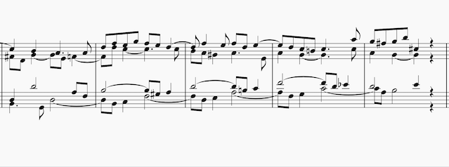

Some (bad) Contrapunctus I Tips
Where to start?
As with learning any piece of music, it's always best to familiarize oneself with how Contrapunctus I sounds before attempting to play it. Being a four-voice fugue, it's certainly possible for someone who dives into learning the notes first to muddle one or more of said voices, since they haven't yet gotten a grasp on what exactly each voice is doing. While sheet music may outline each voice separately, it can still be difficult to keep track of them musically while playing, especially while one is still working out proper fingerings; as such, preparing through extensive listening is the best way to avoid building bad, wrong habits. Here is a recording of Canadian pianist Glenn Gould playing Contrapunctus I at a slow tempo, which may help one to differentiate each voice. I recommend following along with each voice via sheet music once familiar with the overall sound of the piece too.
How to Approach Actually Playing it?
- Start as the piece starts: with the first voice (the alto) entering with the subject (theme). Get a feel for how you want to articulate it, and keep that feeling in mind every time it comes up in the future.
- Once you know how you want to play the subject, follow through with the first voice to get a feel for how its melody moves after its first statement of the subject into free counterpoint. The exposition section of the fugue lasts until measure 16, though it may be helpful to break up the piece into smaller sections when learning, maybe just a couple measures at once.
- Once you have a handle on that, repeat the above with the second voice to enter (the soprano in this case). Once you've familiarized yourself with how it feels inidividually, you can add it to the alto, staying mindful that the two don't muddy each other.
- Repeat the above with the bass and tenor voices.

Other Stuff to Keep in Mind
- There are 4-6 "episodes" within the piece too, which are sections which do not feature the subject; I recommend putting an extra bit of time into these so as to discern which voice your attention may naturally turn to when the default focal point is absent, to better consider what part(s) you actually want to bring to the forefront.
- Pedalling is always a big point of contention with Bach, and I do personally think that it's best to learn Contrapunctus I without the sustain petal at all, in order to make sure you're intentionally sustaining each voice, and not foregoing thought by letting the pedal handle it. Once you're comfortable with the piece, it's up to you whether you use it or not, and where.
- Another thing you can do to get fluid with your interpretation of the piece is to practice playing any section of it with any combination of voices, maintaining the fingering you use when playing all four. Doing this apart from the initial piecing-together style of learning also helps figuring out what parts you'd like to emphasize—I practiced the section in the image above this way (measures 66-77 in the final episode of the piece), and realized I want to bring out the alto voice more, and generally accent the soprano too much.
- Here's a neat breakdown of the piece structurally, featuring audio and visual components: teoria.com . It isn't the best way to learn the piece, but a good way to start understanding its composition.